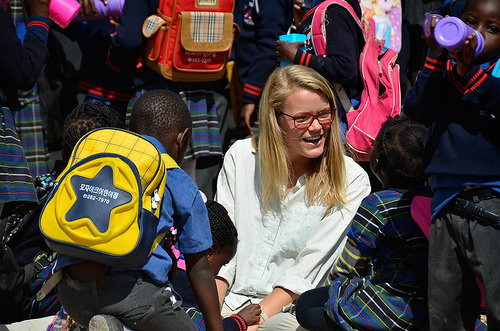
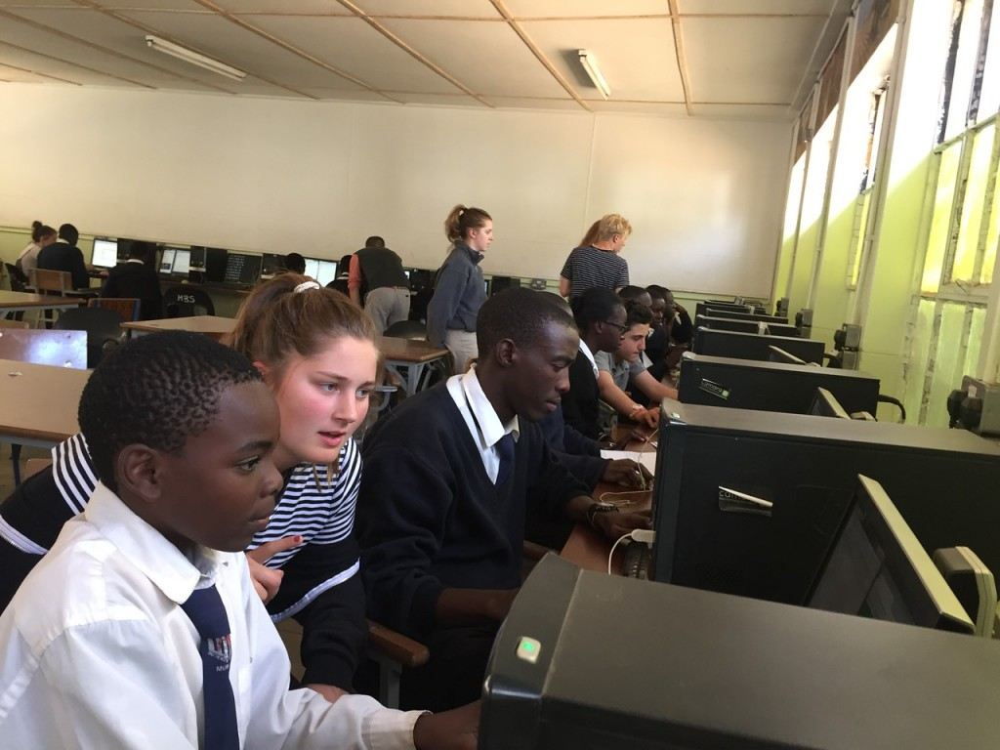
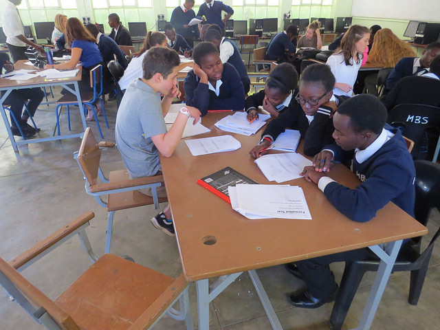
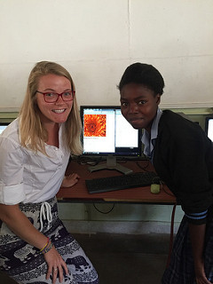
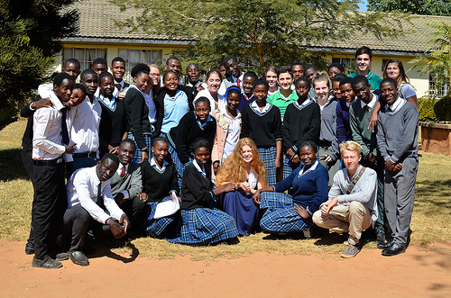

I Fell in Love with Code
I fell in love with coding because of the bridges it builds. And I don’t mean the bridging of two interoperating runtimes, but rather how it unites communities and people.
During the summer of 2016, I traveled with a small group of my students to Lusaka, Zambia where we partnered with local schools for a cultural and technological exchange over the course of four weeks. We brought donated computers and taught basic HTML, CSS, and JavaScript to teens who would then go on to teach their peers in hopes of positioning themselves ahead within the global job market.
I was there not as the code expert but as a mentor for my students. I was essentially the emotional support while my co-leader, Gabe, and my students peer taught the actual code.
Things were rocky at first. It felt as though there were too many cultural differences standing between my students and their Zambian peers to make a genuine connection. The initial lessons flopped because there was nothing connecting them to one another. I think my students, despite all of the prep work they had done building up to the trip, were nervous and uncomfortable in the foreign setting. Neither the Seattle nor the Lusakan students knew how to break down the cultural barrier that existed between them.
That all changed once they got behind a computer together. They began working collaboratively towards a common goal of building a website and all of that trepidation and nervousness vanished. Our Nyanjan, the local Zambian language, got better as we developed a particular vernacular to communicate commonly used and necessary phrases. And because many of the Zambian students were deaf (a common side-effect of Malaria there), we taught ourselves sign language back at our camp each night to further enhance and improve communication.
Suddenly, students on both sides of the communication barrier were able to discover shared commonalities. While building a website together they discovered shared interests, passions, and traits. Oh you like underwater animals too? Okay, cool me too. How about we create a website devoted to facts about the ocean together! The commonalities started out small but soon grew to encompass topics including family, struggles in school, personal relationships, parental pressures, etc. It was peer-to-peer learning and both parties were gaining rich experiences and forming genuine relationships.

The lessons expanded beyond code. The Lusakan students were equipped with better knowledge and tools that would set them apart in their applications to University. They were walking away from the program empowered with leverage in their fight for social, political, and economic equality. And the Seattle students learned a powerful lesson in empathy and experienced intense personal growth and maturation as they became individuals capable of thriving in new and perhaps uncomfortable environments. My students not only learned to code during their time in Zambia but used it as a tool to find commonalities and create deep and genuine connections.
Coding was the bridge between us all. Code provided a common language. It filled the gap. I fell in love coding and the endless opportunities it provided to tell unique narratives that forever linked lives together.
I was hooked. I had to learn more. I came home hungry to know more about programming.